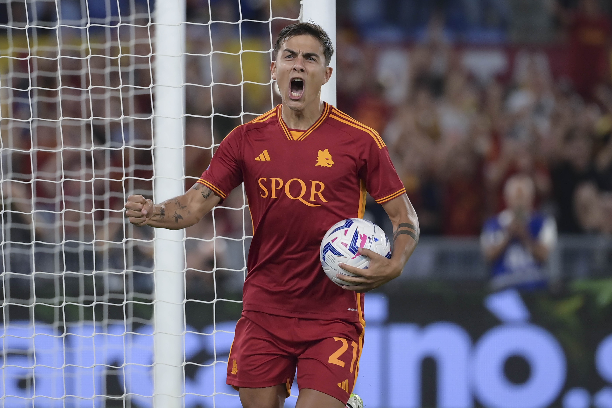
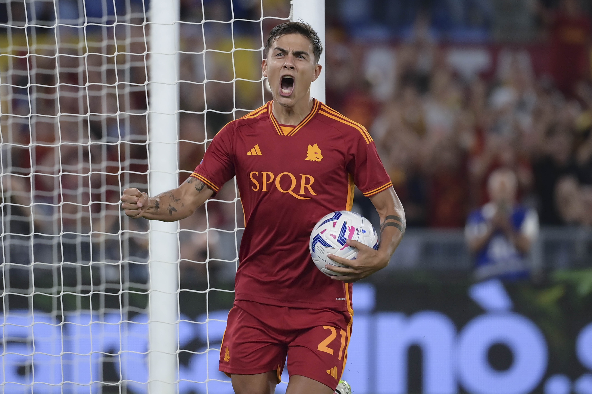

Dybala: la Roma
 

Paulo Dybala della Roma ha giocato nella maggior parte delle gare della sua squadra in Serie A nel 2023/2024, avendo collezionato 6 presenze, per un totale di 442 minuti. É stato scelto nell'11 iniziale in 6 presenze, su 10 giornate. Dybala ha giocato la sua ultima gara l'8 ottobre, con la Roma: una vittoria per 4-1 contro il Cagliari, in cui ha giocato 40 minuti. In totale l'attaccante ha segnato 2 gol in questa stagione - terzo a pari merito tra i giocatori della sua squadra; ha inoltre fornito 2 assist. Ha aperto le sue marcature in questo campionato contro l'Empoli il 17 settembre, avendo segnato due reti nella vittoria per 7-0. La gara casalinga contro il Lecce, il 5 novembre, sarà la prossima gara di Serie A per la Roma, che ha 14 punti e occupa l'8° posto. Dybala ha giocato 25 partite di Serie A nell'ultima stagione con la Roma, realizzando 12 gol e fornendo 6 assist vincenti. Dybala è passato a giocare con la Roma nel luglio 2022, mentre prima giocava con la Juventus, con cui ha collezionato 210 presenze in campionato, con 82 gol e 39 assist.